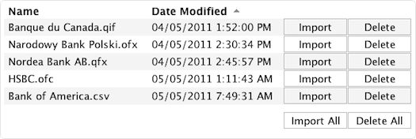
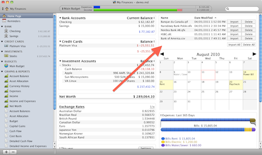

Content
Rationale
Personal finance manager Moneydance® offers a feature to import transaction files, such as from Quicken™. Using third-party background applications to download transaction files on a regular basis I felt that Moneydance® lacks an overview of which files still have to be imported, which, in turn, forces the user to constantly check on the file system.
As a result, this extension monitors a given base directory and displays all of its transaction files in a sortable list inside the homepage view along with two corresponding buttons to import and to delete each transaction file.
Screenshots


Features
-
Integration: Import and delete transaction files seamlessly from the homepage view.
-
Filters: The list displays only the files that Moneydance® can handle (QIF, QFX, OFX, OFC, and CSV transaction files, that is).
-
Keyboard shortcuts: Press <Alt> + <I> to import all transaction files. Delete all transaction files with <Alt> + <D>.
-
Integrity: The extension is audited and signed with the official Moneydance® key.
Requirements
- Moneydance® 2010 or newer
- Java Runtime Environment, version 6 or newer
- Optional: the Text File Importer extension, version 11 or newer (only if you want to import CSV transaction files)
Download
The latest signed version of Import List is available on the official extensions repository:
Installation
- Add the extension to Moneydance® by choosing Add… or Manage Extensions… from the Extensions menu (depending on which version of Moneydance® you use).
- In order to display Import List in Moneydance®’s homepage view, open the Preferences window and click on the Home Page tab. The available items should contain an entry named Import List. Add it to the left or right column of your homepage view.
- You will be asked to choose a base directory where your transaction files reside. You can always change that one later.
Data Tracking
The Import List extension connects to Google Analytics in order to track statistical data on its usage. These data include
-
screen resolution
-
screen color depth
-
language
-
geographical location
-
version of the Import List extension
-
version of Moneydance®.
For more information about Google Analytics’ privacy and security, visit the Google Analytics Privacy Overview. Import List does not submit any financial information.
Feedback
Please submit bugs, issues, and feature suggestions on GitHub’s issue tracker or send them to importlist@my-flow.com.
At the moment I could use some help with the localization for French (France) and Spanish (Spain). If you have some additions to make, please contact me.
{kind=link}
{kind=link}